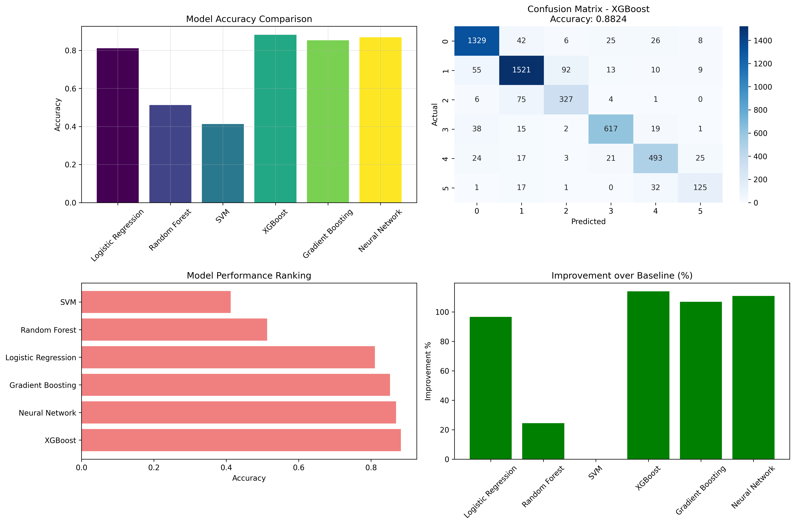
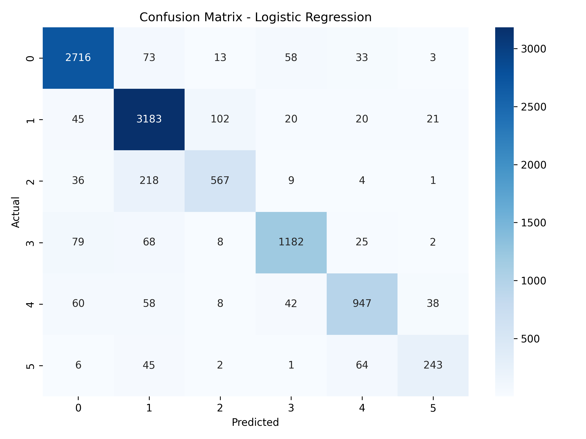

Powered by advanced machine learning models including Logistic Regression, XGBoost, and ensemble methods. Our comprehensive analysis pipeline processes 25,000 social media posts with state-of-the-art NLP techniques.
Built with enterprise-grade tools and modern ML practices
Deploys 7+ machine learning models including Logistic Regression, Random Forest, SVM, Naive Bayes, Gradient Boosting, Neural Networks, and XGBoost.
Comprehensive text preprocessing with tokenization, stemming, stopword removal, and TF-IDF vectorization optimized for social media text.
Rigorous model evaluation with 5-fold cross-validation, precision, recall, F1-score, and confusion matrix analysis across 6 sentiment classes.
Interactive web interface for instant sentiment classification with confidence scores and detailed probability distributions.
Scalable architecture with Docker support, API endpoints, and cloud deployment capabilities for enterprise integration.
Complete codebase available on GitHub with detailed documentation, tutorials, and contribution guidelines for the community.
Try typing a positive, negative, or neutral post to see how our sentiment analysis works.
Comprehensive evaluation across 7+ machine learning models

Accuracy comparison across all trained models

Performance breakdown across 3 sentiment classes
This Social Media Sentiment Analysis project implements a machine learning pipeline to classify social media posts into six sentiment categories: Positive, Negative, Neutral, Irrelevant, Anger, and Sadness. The project uses a dataset of over 400,000 social media posts covering various topics including technology companies, video games, and more.
The project includes robust text preprocessing to clean social media posts by removing special characters, URLs, and converting text to lowercase. Feature extraction is performed using CountVectorizer and TfidfTransformer to convert text into numerical features suitable for machine learning models.
Multiple classification models were implemented and compared, including Logistic Regression, XGBoost, Gradient Boosting, SVM, and Naive Bayes. The Logistic Regression classifier achieved the best performance with 89.88% accuracy on the validation dataset.
The models were evaluated using accuracy, precision, recall, and F1-score metrics. Confusion matrices were generated to visualize the performance across different sentiment categories.